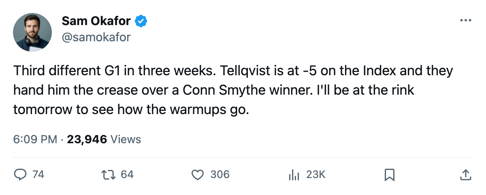

TOR
TORGoalie Room: Tellqvist takes G1, and the Conn Smythe winner sits
The lineup cards for Monday's game against New York have Mikael Tellqvist in at G1 and Roberto Luongo as the backup.
 Sam OkaforLeafs beat reporter · Queen City Telegram
Sam OkaforLeafs beat reporter · Queen City TelegramThe Maple Leafs have moved  Roberto Luongo95 to G2 and handed the starting crease to Mikael Tellqvist73 heading into Thursday's game against
Roberto Luongo95 to G2 and handed the starting crease to Mikael Tellqvist73 heading into Thursday's game against  New York Rangers. Luongo has dressed in 5 games this season; Tellqvist has dressed in 1.
New York Rangers. Luongo has dressed in 5 games this season; Tellqvist has dressed in 1.
The change comes 3 weeks after the season began. Luongo opened as G1, lost the crease to Maxime Ouellet86 on October 16, got it back on October 18, and is on the bench again. Three different goaltenders have worn G1 this season.
The Bureau's Development Index carries Tellqvist at -5, putting him on the fallers list with an overall of 73 against a base of 77. Luongo's overall reads 97 and does not appear on either the risers or fallers list, which places his form at or near his base.
Tellqvist is 26, carries a 6-year contract at $1.20M, and was G2 on the roster before this shift. Luongo, 26, is signed for 1 year at $1.60M and won the Conn Smythe last June.
| goaltender | overall | form | GP this season | salary | contract years |
|---|---|---|---|---|---|
| Roberto Luongo | 97 | at base | 5 | $1.60M | 1 |
| Mikael Tellqvist | 73 | -5 | 1 | $1.20M | 6 |
| Maxime Ouellet | 86 | not listed | 2 | $0.90M | 1 |
The Leafs are 14-4-0-0 in goal against this season across all three goaltenders (28 scored on in 8 games). They have 12 points in 8 games and lead the Northeast.
Toronto hosts New York Rangers on 2005-10-26.
